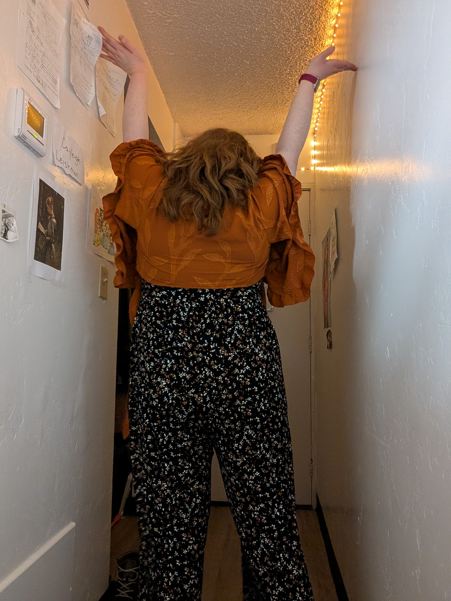
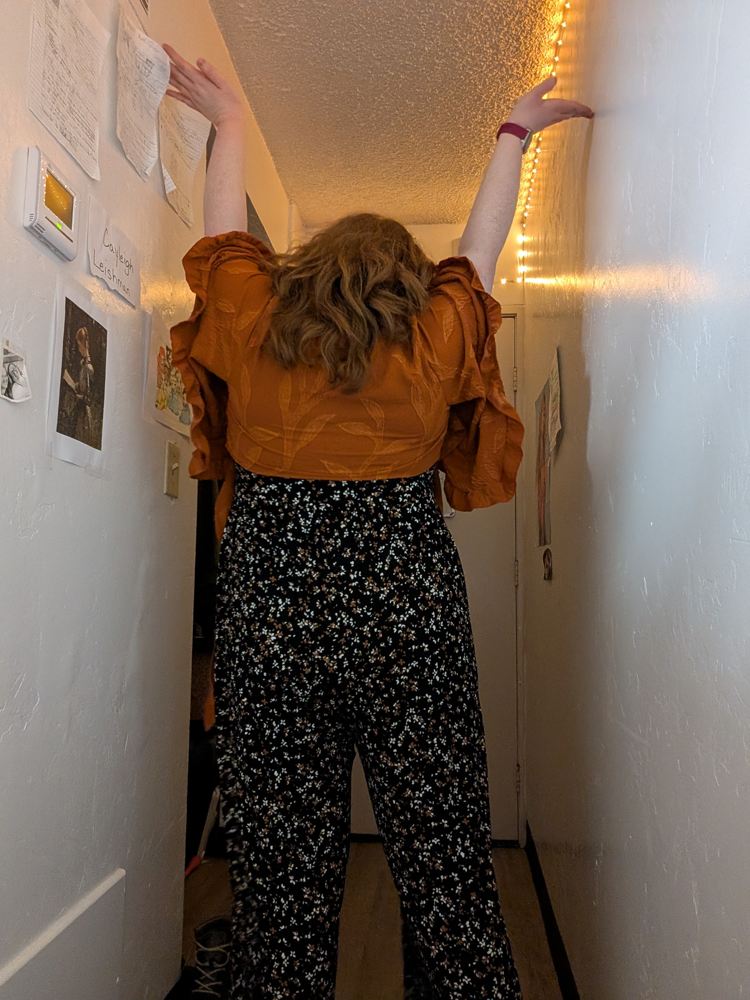

What I Do
I’m studying Software Engineering with a focus on web development. I’m especially curious about UI research—how people use websites and how to make them better for everyone.
 

Skills
HTML, CSS, JavaScript, React, Git, Accessibility, UI/UX research
Where I’m From
With roots in Idaho and Alberta, I now work remotely from the Mountain Time Zone—where the mountains are high and the Wi-Fi (usually) works.
Just For Fun
- Building a closet site that mixes and matches outfits automatically
- Passionate about crafts, vibrant colors, and brain-teasing puzzles